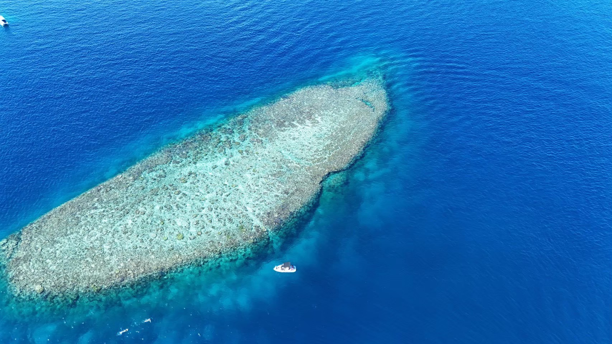
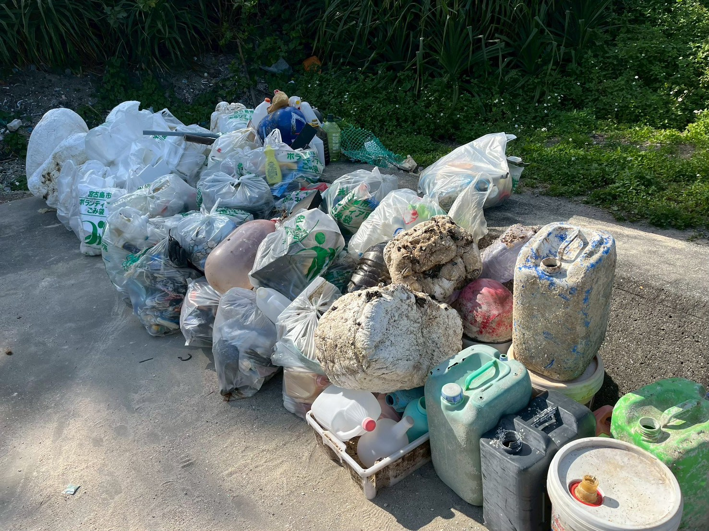
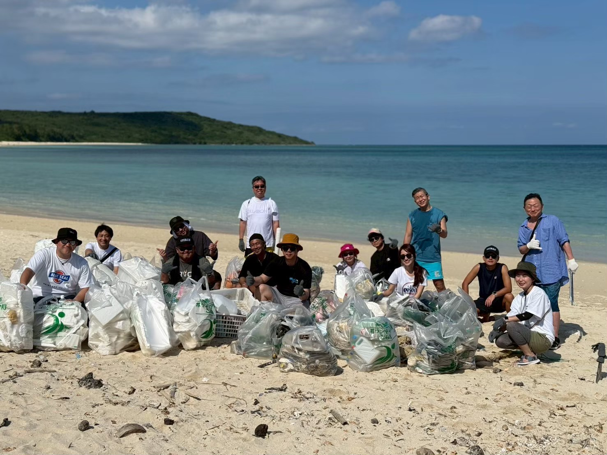
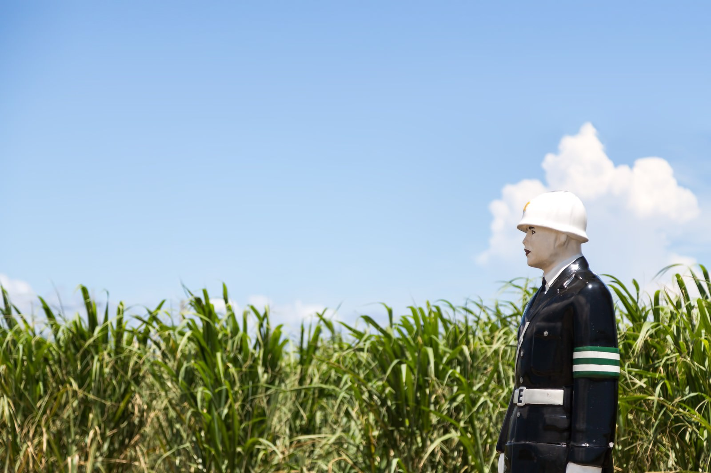

経済的活動
地域との連携を通じて、持続可能な経済活動を実現することを目指しています。現地でのビジネスマッチングや文化体験を通じ、地域経済への貢献と事業成長の両立を図ります。
GENERAL INCORPORATED ASSOCIATION YUINCHU
Save the Miyakojima BLUE for the future.
地域と共に歩み、未来を創り続ける。
PHILOSOPHY
世界を代表するビーチリゾート宮古島。海は「宮古ブルー」といわれるほど美しく、この海で生きるウミガメやサンゴをはじめ、この地で生きる動植物、育まれてきた文化や人の営みは、宮古島の豊かな自然があったからこそ存在しています。
私たち一般社団法人 結人は、この美しく豊かな宮古島に魅了され、次の世代へとつないでいきたいと思っています。
人と人を結び、信頼を築き、経営者としての行動力と想いで新しい価値を生み出していく。この挑戦は、自分たちの利益だけではなく、この島の豊かさを未来へとつないでいくためにあります。
仲間と共に考え、共に学び、共に行動する。この島で暮らし、この島に関わる人とのつながりを大切にしながら、地域と共に歩み、未来を創り続けていきます。
運営法人についてSUSTAINABILITY

地域との連携を通じて、持続可能な経済活動を実現することを目指しています。現地でのビジネスマッチングや文化体験を通じ、地域経済への貢献と事業成長の両立を図ります。
地域行事への参加や地元企業との交流を通じて、地域社会とのつながりを大切にしています。文化継承や人とのつながりを育み、持続可能な社会づくりに貢献します。
自然環境を大切にする意識を共有し、宮古島の美しい自然を守る活動に取り組んでいます。ビーチクリーンなどの行動を通じ、海洋環境を守ります。
BEACH CLEAN PROJECT
一般社団法人 結人は、月に1回は砂浜のゴミを拾い、片付けるビーチクリーン活動を行っています。
宮古ブルーの美しさを保つために、ウミガメが産卵する砂浜を未来につなげるために。拾ったゴミは集め、自治体に回収してもらっています。
ビーチクリーンの後には懇親会を行うこともあり、地域の課題やさらにできること、チャンスはないかを話し合い、次の行動へつなげています。
詳しくはこちら



BUSINESS MATCHING
意思決定権を持つ経営者や地域事業者が集うことで、理念に対してスピード感を持って実行に移します。単なる交流ではなく、地域と共に価値を創る実践を目的としています。

現地企業との直接の対話を通じて、地域課題の理解や協業の可能性を広げます。
宮古島の文化や風習に触れる機会をつくり、地域への理解を深めます。
互いの取り組みを共有し、情報交換にとどまらない具体的な連携へつなげます。

BUSINESS PRODUCT
宮古島には豊かな自然、美しい海と風土から生まれた農作物や商品が様々あります。ビジネスマッチングを通して新たなプロダクトを生み出すこと。新規事業や新たなサービスを構築していく予定です。
ABOUT YUINCHU
宮古島の自然、文化、人の営みを未来へつなぐために、環境保全活動、地域連携、事業共創に取り組んでいます。